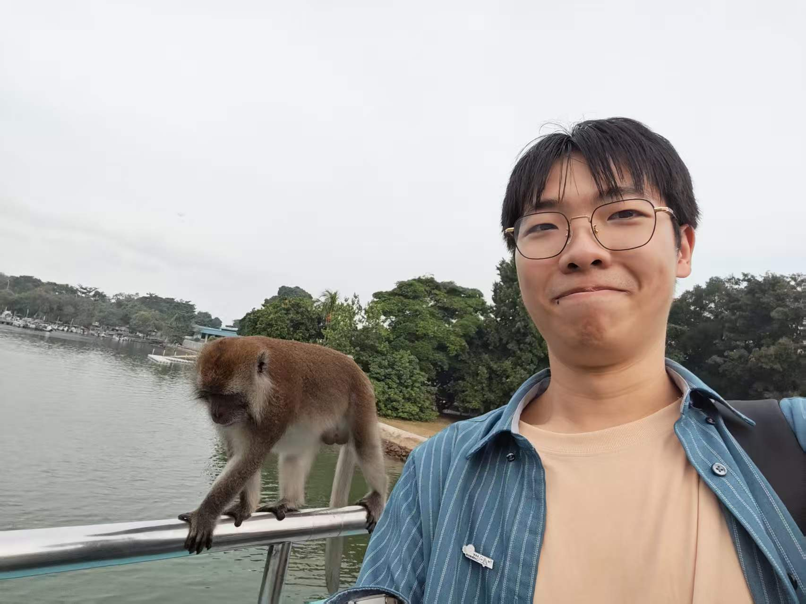
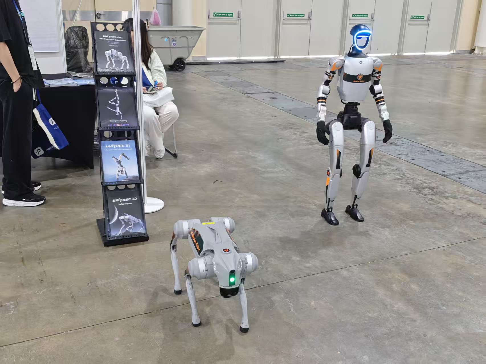
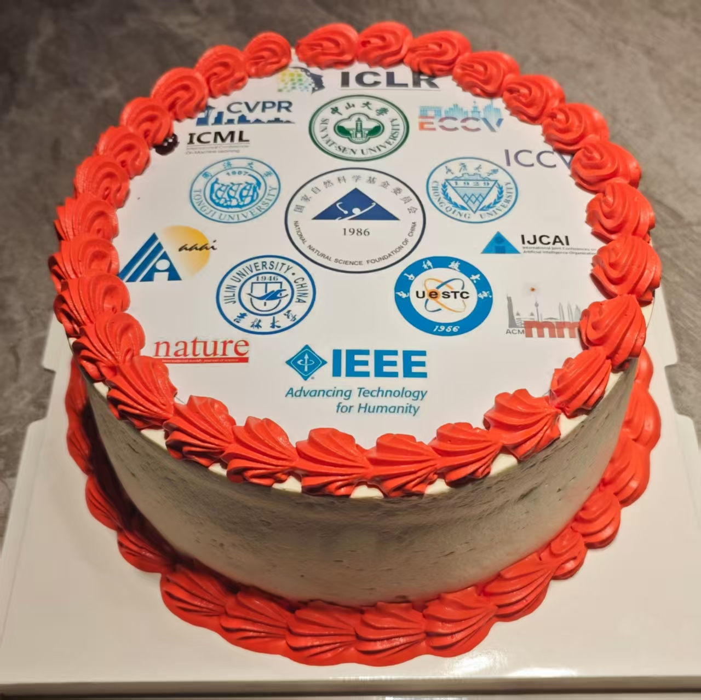
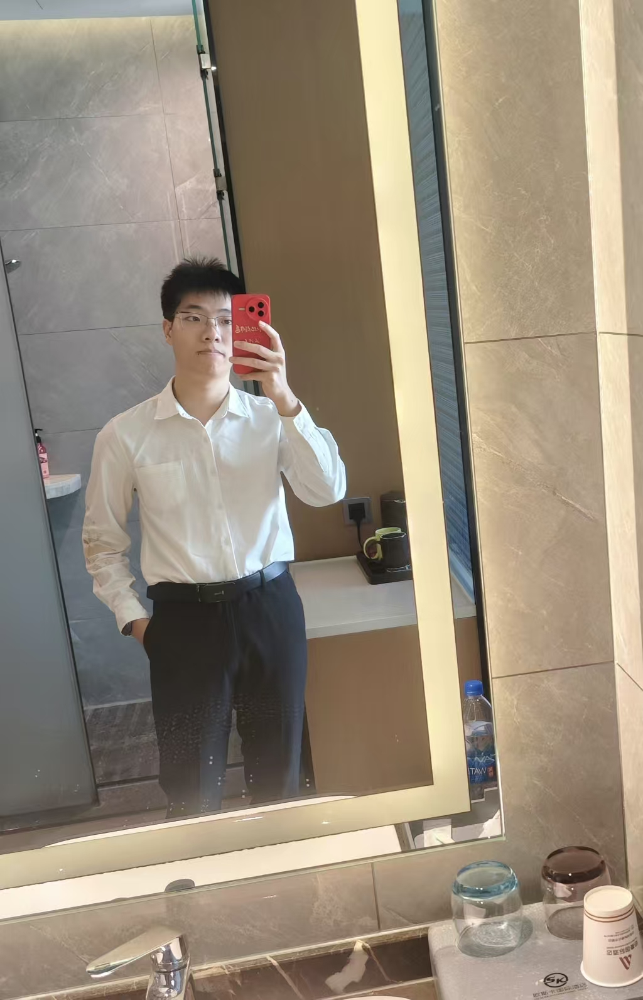
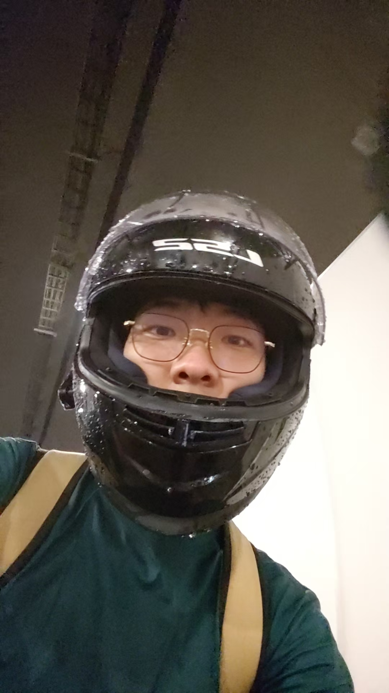
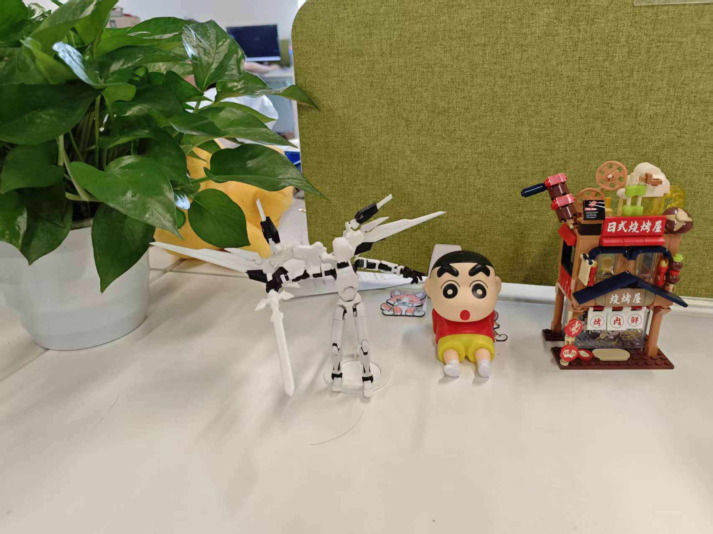
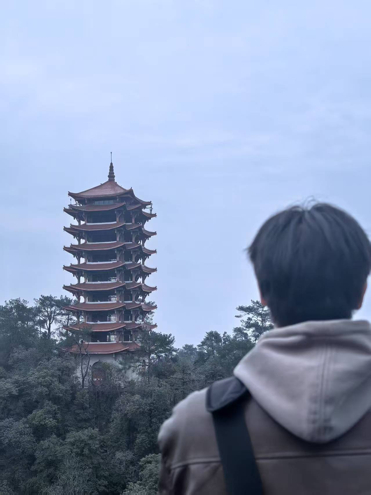
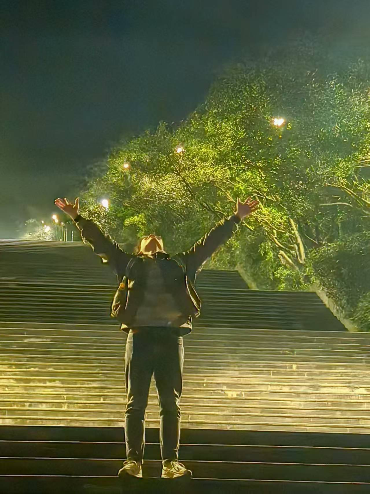
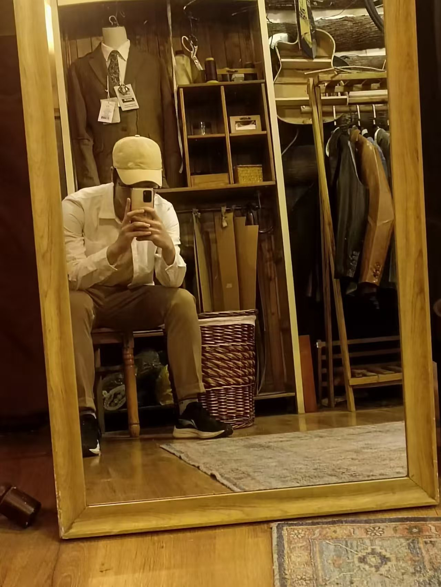
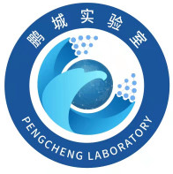

|
吕沁函
Kirin Lyu
|
2024 National Undergraduate Scholarship 🎖
2025 National Inspirational Scholarship 🎖
2024 Model Student
2024 Advanced Individual in Technology
2024, 2025 Outstanding Student
|
2024 National Undergraduate Scholarship 🎖
2025 National Inspirational Scholarship 🎖
2024 Model Student
2024 Advanced Individual in Technology
2024, 2025 Outstanding Student
Hello, I am Kirin Lyu. I am currently an incoming graduate student majoring in Artificial Intelligence, admitted to the School of Aeronautics and Astronautics at Sun Yat-sen University. I am working as a Research Assistant at the HCP Lab, Sun Yat-sen University, advised by Prof. Keze Wang. My current research focuses on VLM, Agents, and VLA models. Meanwhile, I am conducting market research and am passionate about leveraging technology to create value recognized by the market.
Special thanks to Prof. Keze Wang and senior Jusheng for broadening my horizons.









|
Awards 🏆
Scholarships & Honors
2024 National Undergraduate Scholarship 🎖
2025 National Inspirational Scholarship 🎖
2024 Model Student
2024 Advanced Individual in Technology
2024, 2025 Outstanding Student
Competition Awards
1) International & National
National Traffic Science and Technology Competition National First Prize (2024)
National Undergraduate Smart Car Competition (Outdoor) International Second Prize (2024)
China International College Students' Innovation Competition National Bronze Award (2024)
National College Student Digital Media Technology Works and Creativity Competition National Third Prize (2024)
2) Provincial & Regional
"Datang Cup" New Generation ICT Competition Chongqing First Prize (2024)
iCAN International Contest of Innovation Chongqing First Prize (2024)
National Undergraduate Smart Car Competition (iFLYTEK) Western Region Second Prize (2024)
Sichuan-Chongqing College Students (Digital Intelligence) Works Design Competition Chongqing Second Prize (2023)
College Student Psychological Growth Forum Chongqing Second Prize (2024)
Lanqiao Cup Programming Contest (C++ Group) Chongqing Third Prize (2023)
National Digital Art Design Competition Chongqing Third Prize (2024)
China Robotics and Artificial Intelligence Competition (Aelos) Chongqing Third Prize (2024)
RAICOM Robotics Developer Competition (Treasure Alliance) Chongqing Third Prize (2024)
Chinese Collegiate Computing Competition Chongqing Third Prize (2024)
|
|
|
HCP Lab, Sun Yat-sen University
Research Assistant
Advised by Prof. Keze Wang. Focusing on VLM, Agent, and VLA models.
Guangzhou, China. 2025/7 - Present
|
|

|
Peng Cheng Laboratory
Research Assistant
Research on 3D Reconstruction.
Shenzhen, China. 2025/6 - 2025/7
|
|
|
Mingyue Lake International Intelligent Industry Innovation Base
Intern
Research on Speech Emotion Recognition. Mentored by Anfei Fan.
Chongqing, China. 2025/3 - 2025/8
|

|
Chongqing Jiaotong University
Undergraduate Student
Rank: 2/65 | GPA: 4.12/5.00
Focusing on Image Segmentation and Object Detection.
Chongqing, China. 2022/7 - Present
|
Research 💡
Interests:
· Agent 🤖
· Vision-Language-Action (VLA) Model 🦾
· Vision-Language Model (VLM) 👁️🗨️
|
Stable Language Guidance for Vision-Language-Action Models
Z Zhan, Y Chen, J Zhou, Q Lv, H Liu, K Wang, L Lin, G Wang
Abstract: Vision-Language-Action (VLA) models have demonstrated impressive capabilities in generalized robotic control; however, they remain notoriously brittle to linguistic perturbations. We identify a critical “modality collapse” phenomenon where strong visual priors overwhelm sparse linguistic signals, causing agents to overfit to specific instruction phrasings while ignoring the underlying semantic intent. To address this, we propose Residual Semantic Steering (RSS), a probabilistic framework that disentangles physical affordance from semantic execution. RSS introduces two theoretical innovations: (1) Monte Carlo Syntactic Integration, which approximates the true semantic posterior via dense, LLM-driven distributional expansion, and (2) Residual Affordance Steering, a dual-stream decoding mechanism that explicitly isolates the causal influence of language by subtracting the visual affordance prior. Theoretical analysis suggests that RSS effectively maximizes the mutual information between action and intent while suppressing visual distractors. Empirical results across diverse manipulation benchmarks demonstrate that RSS achieves state-of-the-art robustness, maintaining performance even under adversarial linguistic perturbations.
Keywords: VLA, Vision-Language-Action.
[Paper]
Under Review
Mm-cot: a benchmark for probing visual chain-of-thought reasoning in multimodal models
J Zhang, K Cai, X Guo, S Liu, Q Lv, R Chen, J Yang, Y Fan, X Sun, ...
Abstract: The ability to perform Chain-of-Thought (CoT) reasoning marks a major milestone for multimodal models (MMs), enabling them to solve complex visual reasoning problems. Yet a critical question remains: is such reasoning genuinely grounded in visual evidence and logically coherent? Existing benchmarks emphasize generation but neglect verification, i.e., the capacity to assess whether a reasoning chain is both visually consistent and logically valid. To fill this gap, we introduce MM-CoT, a diagnostic benchmark specifically designed to probe the visual grounding and logical coherence of CoT reasoning in MMs. Instead of generating free-form explanations, models must select the sole event chain that satisfies two orthogonal constraints: (i) visual consistency, ensuring all steps are anchored in observable evidence, and (ii) logical coherence, ensuring causal and commonsense validity. Adversarial distractors are engineered to violate one of these constraints, exposing distinct reasoning failures. We evaluate leading vision-language models on MM-CoT and find that even the most advanced systems struggle, revealing a sharp discrepancy between generative fluency and true reasoning fidelity. MM-CoT shows low correlation with existing benchmarks, confirming that it measures a unique combination of visual grounding and logical reasoning. This benchmark provides a foundation for developing future models that reason not just plausibly, but faithfully and coherently within the visual world.
Keywords: Multimodal, Chain-of-Thought.
[Paper]
Under Review
Hybridtoken-vlm: Hybrid token compression for vision-language models
J Zhang, X Guo, K Cai, Q Lv, Y Fan, W Chai, J Wang, K Wang
Abstract: Vision-language models (VLMs) have transformed multimodal reasoning, but feeding hundreds of visual patch tokens into LLMs incurs quadratic computational costs, straining memory and context windows. Traditional approaches face a trade-off: continuous compression dilutes high-level semantics such as object identities, while discrete quantization loses fine-grained details such as textures. We introduce HTC-VLM, a hybrid framework that disentangles semantics and appearance through dual channels, i.e., a continuous pathway for fine-grained details via ViT patches and a discrete pathway for symbolic anchors using MGVQ quantization projected to four tokens. These are fused into a 580-token hybrid sequence and compressed into a single voco token via a disentanglement attention mask and bottleneck, ensuring efficient and grounded representations. HTC-VLM achieves an average performance retention of 87.2 percent across seven benchmarks (GQA, VQAv2, MMBench, MME, POPE, SEED-Bench, ScienceQA-Image), outperforming the leading continuous baseline at 81.0 percent with a 580-to-1 compression ratio. Attention analyses show that the compressed token prioritizes the discrete anchor, validating its semantic guidance. Our work demonstrates that a minimalist hybrid design can resolve the efficiency-fidelity dilemma and advance scalable VLMs.
Keywords: VLM, Token Compression.
[Paper]
Under Review
Hiva: Self-organized hierarchical variable agent via goal-driven semantic-topological evolution
J Tang*, J Zhang*, Q Lv*, S Liu, J Yang, C Tang, K Wang
AAAI Conference on Artificial Intelligence (AAAI), 2026 (Poster)
Abstract: Autonomous agents play a crucial role in advancing Artificial General Intelligence, enabling problem decomposition and tool orchestration through Large Language Models (LLMs). However, existing paradigms face a critical trade-off. On one hand, reusable fixed workflows require manual reconfiguration upon environmental changes; on the other hand, flexible reactive loops fail to distill reasoning progress into transferable structures. We introduce Hierarchical Variable Agent (HiVA), a novel framework modeling agentic workflows as self-organized graphs with the Semantic-Topological Evolution (STEV) algorithm, which optimizes hybrid semantic-topological spaces using textual gradients as discrete-domain surrogates for backpropagation. The iterative process comprises Multi-Armed Bandit-infused forward routing, diagnostic gradient generation from environmental feedback, and coordinated updates that co-evolve individual semantics and topology for collective optimization in unknown environments. Experiments on dialogue, coding, Long-context Q&A, mathematical, and agentic benchmarks demonstrate improvements of 5-10% in task accuracy and enhanced resource efficiency over existing baselines, establishing HiVA’s effectiveness in autonomous task execution.
Keywords: Agent, Hierarchical Variable Agent.
[Paper]
[Code]
AAAI 2026
CoAgent: Collaborative Planning and Consistency Agent for Coherent Video Generation
Q Zeng, K Cai, R Chen, Q Lv, K Wang
Abstract: Maintaining narrative coherence and visual consistency remains a central challenge in open-domain video generation. Existing text-to-video models often treat each shot independently, resulting in identity drift, scene inconsistency, and unstable temporal structure. We propose CoAgent, a collaborative and closed-loop framework for coherent video generation that formulates the process as a plan-synthesize-verify pipeline. Given a user prompt, style reference, and pacing constraints, a Storyboard Planner decomposes the input into structured shot-level plans with explicit entities, spatial relations, and temporal cues. A Global Context Manager maintains entity-level memory to preserve appearance and identity consistency across shots. Each shot is then generated by a Synthesis Module under the guidance of a Visual Consistency Controller, while a Verifier Agent evaluates intermediate results using vision-language reasoning and triggers selective regeneration when inconsistencies are detected. Finally, a pacing-aware editor refines temporal rhythm and transitions to match the desired narrative flow. Extensive experiments demonstrate that CoAgent significantly improves coherence, visual consistency, and narrative quality in long-form video generation.
Keywords: Agent, Video Generation.
[Paper]
arXiv
Enhancing Generalization and Fine-Grained Control in VLA Models via Continuized Discrete Diffusion
Z Zhan, J Zhou, L Zhang, Q Lv, H Liu, J Zhang, W Li, Z Chen, T Chen, ...
Abstract: Vision-Language-Action (VLA) models offer a unified framework for robotic manipulation by integrating visual perception, language understanding, and control generation. Yet existing VLA models still struggle to generalize across diverse tasks, scenes, and camera viewpoints, and often produce coarse or unstable actions. We introduce E0, a continuized discrete diffusion framework that formulates action generation as iterative denoising over quantized action tokens. Compared with continuous diffusion policies, E0 offers two key advantages: (1) discrete action tokens align naturally with the symbolic structure of pretrained VLM/VLA backbones, enabling stronger semantic conditioning; and 2. discrete diffusion matches the true quantized nature of real-world robot control-whose hardware constraints (e.g., encoder resolution, control frequency, actuation latency) inherently discretize continuous signals-and therefore benefits from a Bayes-optimal denoiser that models the correct discrete action distribution, leading to stronger generalization. Compared with discrete autoregressive and mask-based discrete diffusion models, E0 supports a significantly larger and finer-grained action vocabulary and avoids the distributional mismatch introduced by masking-based corruptions-yielding more accurate fine-grained action control. We further introduce a spherical viewpoint perturbation augmentation method to improve robustness to camera shifts without additional data. Experiments on LIBERO, VLABench, and ManiSkill show that E0 achieves state-of-the-art performance across 14 diverse environments, outperforming strong baselines by 10.7% on average. Real-world evaluation on a Franka arm confirms that E0 delivers precise, robust, and transferable manipulation, establishing discrete diffusion as a promising direction for generalizable VLA policy learning.
Keywords: VLA, Diffusion.
[Paper]
Under Review
Beyond Pixels: Introducing Geometric-Semantic World Priors for Video-based Embodied Models via Spatio-temporal Alignment
J Tang, S Liu, W Xiu, Q Lv, X Li
Abstract: Achieving human-like reasoning in deep learning models for complex tasks in unknown environments remains a critical challenge in embodied intelligence. While advanced vision-language models (VLMs) excel in static scene understanding, their limitations in spatio-temporal reasoning and adaptation to dynamic, open-set tasks like task-oriented navigation and embodied question answering (EQA) persist due to inadequate modeling of fine-grained spatio-temporal cues and physical world comprehension. To address this, we propose VEME, a novel cross-modal alignment method that enhances generalization in unseen scenes by learning an ego-centric, experience-centered world model. Our framework integrates three key components: (1) a cross-modal alignment framework bridging objects, spatial representations, and visual semantics with spatio-temporal cues to enhance VLM in-context learning; (2) a dynamic, implicit cognitive map activated by world embedding to enable task-relevant geometric-semantic memory recall; and (3) an instruction-based navigation and reasoning framework leveraging embodied priors for long-term planning and efficient exploration. By embedding geometry-aware spatio-temporal episodic experiences, our method significantly improves reasoning and planning in dynamic environments. Experimental results on VSI-Bench and VLN-CE demonstrate 1%-3% accuracy and exploration efficiency improvement compared to traditional approaches.
Keywords: Embodied AI, World Priors.
[Paper]
arXiv
Drowning Detection
Built a vision-based drowning detection system that fuses object detection and pose estimation to identify abnormal postures and trigger real-time alerts in water scenes.
Keywords: Object Detection, Pose Estimation
National Undergraduate Innovation Program
Smart Car Competition
Designed an autonomous smart car with robust lane-following and control logic, enabling stable trajectory tracking and autonomous driving on competition tracks.
Keywords: Lane-Following Algorithms, Autonomous Driving
National Competition
Tobacco Soil Conservation
Conducted metagenomic analysis of soil microbial communities and built bioinformatics workflows to evaluate soil health and support conservation strategies.
Keywords: Metagenomics, Bioinformatics
Tobacco Bureau Collaboration
Robotic Arm Industry Collaboration
Developed embodied-intelligence-driven robotic arm solutions with perception and task execution, targeting reliable commercial deployment.
Keywords: Embodied Intelligence, Commercial Deployment
Tuoyuan Company Collaboration
|
 Google Scholar
Google Scholar